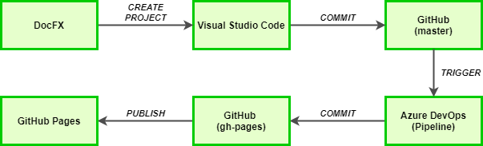

DOKUMENTACJA W FORMIE PUBLICZNEJ - DOCFX, AZURE PIPELINES, GITHUB PAGES
Poniższa dokumentacja dotyczy przykładowego rozwiązania znajdującego się pod adresem: https://soneta.github.io/docfx-soneta/
FlowChart aplikacji:

Opis schematu:
- Tworzymy nowy projekt dokumentacji z wykorzystaniem DocFX.
- Za pomocą Visual Studio Code dokonujemy w nim wszelkich zmian. Inicjujemy lokalne repozytorium.
- Następnie wykonujemy push do Github na branch master (na nim bedzie historia zmian zwiazana z zawartoscia artykułów).
- Po wykonaniu commita zostaje automatycznie uruchomiony pipeline na Azure DevOps, który pobiera kod z naszego repozytorium na github, buduje go generując statyczne strony dokumentacji
- Następnie publikuje tj. wykonuje commit powrotny do naszego repozytorium na github z tym że tym razem commit dotyczy brancha gh-pages (branch który jest źródłem dla GitHub Pages).
- W momencie poprawnego zakończenia pracy pipeline'a oraz wykonaniu commita, strona prezentująca naszą dokumentację (GitHub Pages) zostaje uzupełniona o zmiany przez nas dokonane.
Wskazówki:
DocFX
- Zapoznać się z dokumentacją: https://dotnet.github.io/docfx/
- Stworzyć własny projekt zgodnie z instrukcją w dokumentacji
Visual Studio Code
Dostosować utworzony standardowo projekt według swoich indywidualnych preferencji i potrzeb.
Dodatek do VSC pomagąjący w pracy z DocFX:
Dodatek wspomagający pracę z plikami md:
Kod źródłowy dokumentacji DocFX (przykładowy kod):
Krótkie kursy tutoriale użytkowników:
Gotowy projekt zainicjować jako repozytorium git (w terminalu Visual Studio Code), a następnie zgodnie z instrukcją: https://help.github.com/en/github/importing-your-projects-to-github/adding-an-existing-project-to-github-using-the-command-line utworzyć nowe repozytorium na GitHub oraz dostarczyć tam swój projekt.
Github
Na nowo utworzonym repozytorium na Github powinny znajdować się min. 2 branche: master (tworzony automatycznie) oraz "czysty" branch gh-pages (instrukcja utworzenia: https://gist.github.com/ramnathv/2227408)
Kolejnym krokiem powinno być skonfigurowanie Github Pages. W tym celu należy podążać zgodnie ze wskazówkami wskazanymi w dokumentacjach:
Następnie do github należy "podpiąć" dwie aplikacje:
Azure Pipelines (aplikacja umożliwiająca połączenie z Azure DevOps)
utterances (aplikacja umożliwiająca skorelowanie komentarzy artykułów na GitHub Pages z issue na GitHub)
https://developer.github.com/apps/installing-github-apps/
Azure DevOps
W pierszym kroku należy utworzyć projekt na Azure DevOps
Następnie w zakładce pipelines tworzymy nowy pipeline oraz korelujemy go z naszym repozytorium na GitHub
W utworzonym pipeline należy wykorzystać dwa taski:
- Budowa statycznego contentu z którego będzię korzystał GitHub Pages: https://marketplace.visualstudio.com/items?itemName=chrismason.vsts-docfxtasks
- Publikacja w/w contentu powrotnie do repozytorium na github a tym samym zasilenie GitHub Pages: https://marketplace.visualstudio.com/items?itemName=AccidentalFish.githubpages-publish
W ustawieniach pipeline w zakładce Triggers ustawić automatyczne triggerowanie w przypadku pojawienia się nowego commita na branchu master.